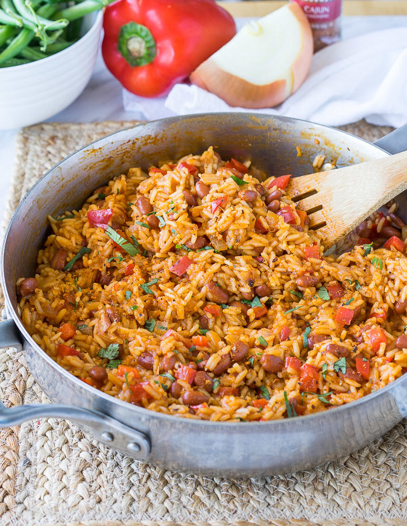

Red Beans and Rice

Description
This is a delicous side dish that can go with any meal. It
can be easily modified to be mild or spicy and will satisfy
everyone.
Ingedients
- 1 cup rice
- 1 can chicken broth
- 1 can red beans (rinsed)
- 1/2 cup chopped onion
- 1/2 cup chopped bell pepper
- 1 tbsp each pepper, garlic, salt, paprica
- 1 tbsp of oil
Steps
- Heat oil on med-high heat in med pot.
- Fry rice until light brown
- Add chicken broth, beans, veggies, and seasoning
- Bring to boil and cover
- reduce heat to simmer for 15 minutes
- Stir and serve
Return to main Page